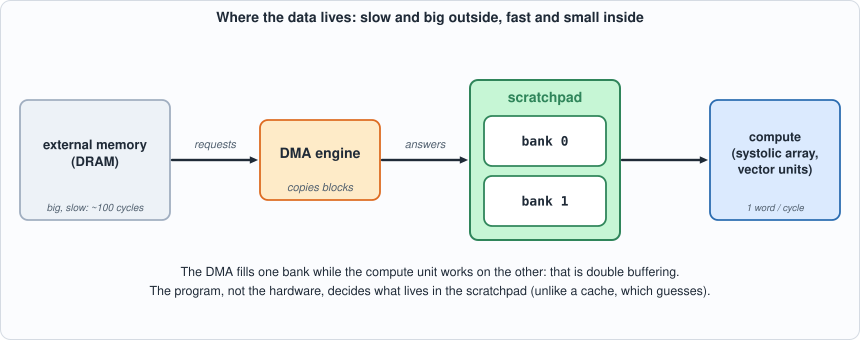
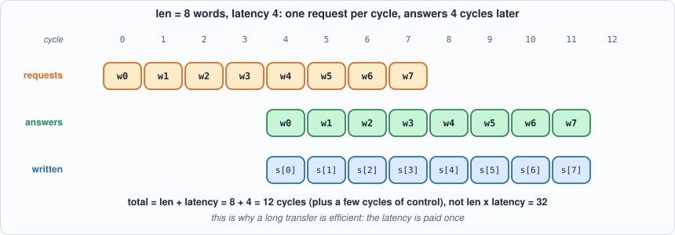
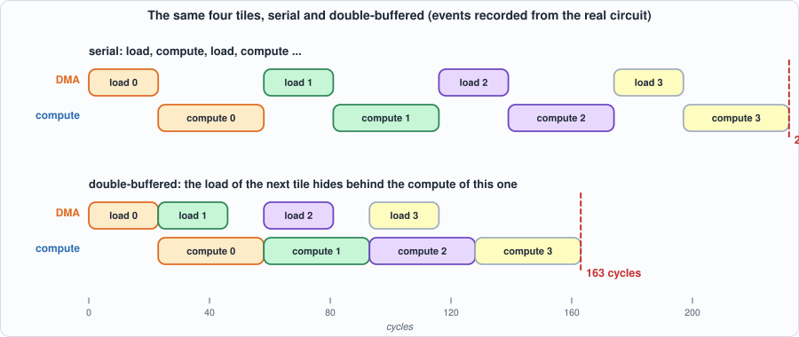
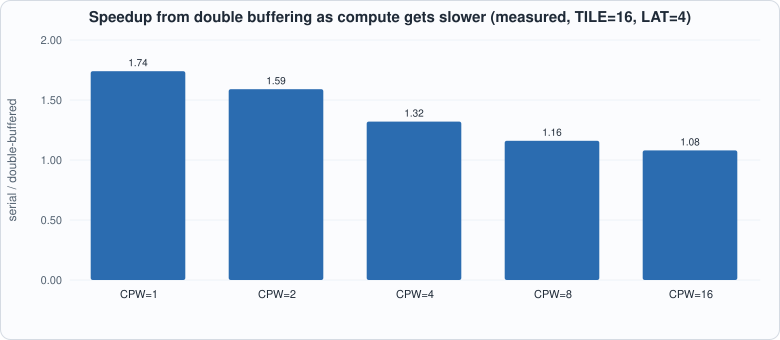
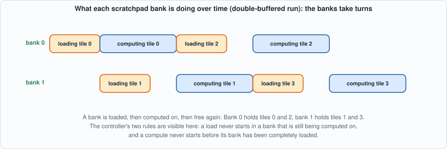
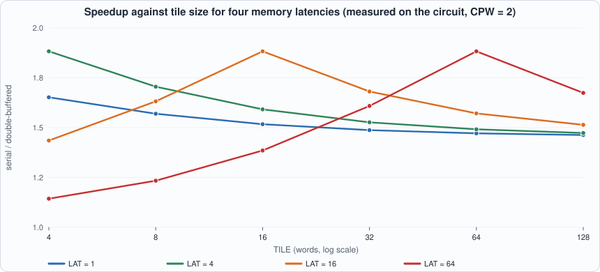

5. The Scratchpad, the DMA Engine, and Double Buffering¶
About the animals in this picture and where they are standing
- Alpine ibex (Capra ibex) lives in the European Alps, usually above the tree line on steep rock, and is a famously sure-footed climber. Males carry horns that can reach about a metre. Hunting left only a small remnant, around the Gran Paradiso in Italy, by the early 1800s; reintroductions have since restored it across the Alps.
- West Caucasian tur (Capra caucasica) lives only in the western Caucasus, on steep slopes above the forest line. Its horns are short and heavy, curving outward and back, and it moves up and down cliffs with ease.
- Iberian ibex (Capra pyrenaica) lives in the mountains of Spain and Portugal. Its Pyrenean subspecies, the bucardo, died out in 2000. In 2003 scientists cloned one; the kid lived only minutes, making it the first extinct animal to be cloned.
- Domestic goat (Capra hircus) descends from the bezoar ibex and is among the oldest domesticated animals. There are on the order of a billion of them, kept for milk, meat, fibre and as pack animals.
- Walia ibex (Capra walie) lives nowhere but the Simien Mountains of northern Ethiopia, on high cliffs. It is endangered, with only a few hundred animals remaining, and is protected within the Simien Mountains National Park.
The scene is imaginary: it is set on Europa, the icy moon of Jupiter, which hides a salty ocean beneath its ice; Jupiter fills the sky. The animals are stylised drawings, shown where they could not live, for effect.
What you will understand: why an accelerator has its own small memory instead of a cache, how a DMA engine moves data without the compute units waiting on it, and how double buffering hides memory latency behind arithmetic. You will build all three, derive the cycle count of the whole stream as a formula, check the formula against the circuit to the cycle on eight shapes, and see which shapes of test are needed to catch the bugs in the controller.
What you need to know first: Chapters 1-4. No new arithmetic: this chapter is about time. Appendix F (memory systems and DRAM) gives the background on why memory is slow.
What this chapter builds: rtl/sram.v (the scratchpad), rtl/dma.v (the DMA engine), rtl/dbuf.v (the double-buffering controller), model/dbuf_gold.py (answer key and schedule model), tb/extmem.v and tb/dbuf_tb.v (the external-memory model and the testbench), tools/mut_ch05.py (mutation), and for the running examples tb/dbuf_trace_tb.v, tools/ch05_example_a.py, tools/ch05_example_b.py.
The problem: compute is fast, memory is slow¶
The systolic array of Chapter 4 consumes new operands every cycle. External memory (DRAM) answers a request only many cycles later (its latency), though it can accept a new request every cycle (it is pipelined). If the array asks for data and waits, it spends most of its life waiting. The accelerator therefore has:
- a scratchpad: a small on-chip memory the program manages explicitly (unlike a cache, which guesses). Its read takes one cycle, always.
- a DMA engine (direct memory access): a little state machine that copies a block from external memory into the scratchpad on command, so nothing else has to be involved.
- a controller that overlaps the two: while the compute unit works on the tile in one half of the scratchpad, the DMA fills the other half with the next tile. That is double buffering.

Figure 5.1: the four parts. Slow and large on the left, fast and small on the right; the DMA engine is the only thing that talks to DRAM.An analogy: a cook (the compute unit) works at a counter (the scratchpad); the pantry is down the hall (DRAM). A bad cook walks to the pantry for each ingredient. A good one has an assistant (the DMA) who keeps the counter stocked: the cook works on this dish while the assistant fetches the ingredients for the next. Double buffering is two counter areas, one being used and one being stocked. The assistant makes one trip carrying a whole tray, not one trip per ingredient, because the walk is the expensive part.
The scratchpad: rtl/sram.v¶
// Chapter 5: an on-chip memory (a scratchpad). One write port and one read port; the read is SYNCHRONOUS: the address is presented in one cycle and the data appears in the next.
// If a read and a write hit the same address in the same cycle, the read returns the OLD value (read-before-write), which is what the real memory macros do and what the controller relies on never happening.
module sram #(parameter W = 32, AW = 8) (input clk, input we, input [AW-1:0] waddr, input [W-1:0] wdata, input [AW-1:0] raddr, output reg [W-1:0] rdata);
reg [W-1:0] mem [0:(1<<AW)-1];
always @(posedge clk) begin
if (we) mem[waddr] <= wdata;
rdata <= mem[raddr];
end
endmodule
One write port, one read port, synchronous read: the address goes in, the data comes out next cycle. If a read and a write hit the same address in the same cycle, the read returns the old value. The controller below is designed so that it never relies on that.
The DMA engine: rtl/dma.v¶
// Chapter 5: a DMA engine. It copies len words from external memory (word address src) into the scratchpad (word address dst) without the processor touching each word.
// External interface: every cycle the engine may present a request (req_valid, req_addr); the answer (resp_valid, resp_data) arrives a fixed number of cycles later, and requests are pipelined, so the engine keeps issuing without waiting.
// Cycles for one transfer = len (issue) + latency + a few cycles of control; that is the whole cost model, and the double-buffered controller exists to hide it.
module dma #(parameter AW = 8, XW = 16) (
input clk, input rst, input start, input [XW-1:0] src, input [AW-1:0] dst, input [AW-1:0] len,
output reg busy, output reg done,
output req_valid, output [XW-1:0] req_addr, input resp_valid, input [31:0] resp_data,
output sram_we, output [AW-1:0] sram_waddr, output [31:0] sram_wdata);
reg [XW-1:0] src_r; reg [AW-1:0] dst_r, len_r, issued, recvd;
assign req_valid = busy && issued != len_r;
assign req_addr = src_r + issued;
assign sram_we = resp_valid; assign sram_waddr = dst_r + recvd; assign sram_wdata = resp_data;
always @(posedge clk) begin
done <= 1'b0;
if (rst) begin busy <= 1'b0; issued <= 0; recvd <= 0; end
else if (start && !busy) begin busy <= 1'b1; src_r <= src; dst_r <= dst; len_r <= len; issued <= 0; recvd <= 0; end
else if (busy) begin
if (issued != len_r) issued <= issued + 1;
if (resp_valid) begin
recvd <= recvd + 1;
if (recvd == len_r - 1) begin busy <= 1'b0; done <= 1'b1; end
end
end
end
endmodule
On start it remembers a source address, a destination and a length. Every cycle it issues the next request; every answer, which arrives LAT cycles later, is written to the scratchpad at the next destination address. When the last answer is written it pulses done. Because requests are pipelined, a transfer of len words takes about len + LAT cycles, not len * LAT.

Figure 5.2: a pipelined transfer. Requests go out in cycles 0-7, answers come back in cycles 4-11. The latency is paid once, at the start, not once per word.The controller: rtl/dbuf.v¶
// Chapter 5: stream T tiles of TILE words from external memory, sum each tile, and report the sums, with the load of the next tile hidden behind the compute of the current one.
// Two banks of the scratchpad hold two tiles. dbl = 1: tile n is loaded into bank n%2 as soon as that bank is EMPTY, while the other bank is being computed on (double buffering).
// dbl = 0: a load may start only when nothing is full and nothing is computing (serial: load, compute, load, compute...).
// A bank is marked empty only when the compute on it has FINISHED, so a load can never overwrite data that is still being read.
// Compute reads one word every CPW cycles (CPW models how long the arithmetic takes per word) and adds it into a 32-bit sum.
module dbuf #(parameter TILE = 16, CPW = 1, AW = 8, XW = 16) (
input clk, input rst, input start, input dbl, input [7:0] ntiles, input [XW-1:0] base,
output req_valid, output [XW-1:0] req_addr, input resp_valid, input [31:0] resp_data,
output reg done, output reg sum_valid, output reg [31:0] sum_data, output reg [31:0] cycles);
// scratchpad and DMA
wire sram_we; wire [AW-1:0] sram_waddr; wire [31:0] sram_wdata, rdata; wire [AW-1:0] raddr;
sram #(.W(32), .AW(AW)) mem (.clk(clk), .we(sram_we), .waddr(sram_waddr), .wdata(sram_wdata), .raddr(raddr), .rdata(rdata));
reg d_start; reg [XW-1:0] d_src; reg [AW-1:0] d_dst; wire d_busy, d_done;
dma #(.AW(AW), .XW(XW)) engine (.clk(clk), .rst(rst), .start(d_start), .src(d_src), .dst(d_dst), .len(TILE[AW-1:0]), .busy(d_busy), .done(d_done),
.req_valid(req_valid), .req_addr(req_addr), .resp_valid(resp_valid), .resp_data(resp_data), .sram_we(sram_we), .sram_waddr(sram_waddr), .sram_wdata(sram_wdata));
// control state
reg running; reg [7:0] ld_n, cp_n, sums_out; reg [1:0] full; reg ld_active; reg ld_bank;
// compute state
reg c_busy, c_bank, drain, rd_v; reg [AW-1:0] wi; reg [7:0] ph; reg [31:0] acc;
wire c_issue = c_busy && !drain && ph == CPW - 1; // a word is read in the last cycle of its slot, so every CPW takes TILE*CPW cycles plus a fixed tail
assign raddr = (c_bank ? TILE : 0) + wi;
wire c_finish = c_busy && drain && !rd_v;
// decisions made this cycle (functions of the state before the edge)
wire [0:0] nb = ld_n[0]; // bank the next load would use
wire can_load = running && !ld_active && !d_busy && ld_n < ntiles && !full[nb] && (dbl || (full == 2'b00 && !c_busy));
wire can_comp = running && !c_busy && full[cp_n[0]] && cp_n < ntiles;
always @(posedge clk) begin
d_start <= 1'b0; done <= 1'b0; sum_valid <= 1'b0; rd_v <= 1'b0;
if (rst) begin running <= 0; ld_active <= 0; c_busy <= 0; full <= 0; cycles <= 0; end
else begin
if (start && !running) begin running <= 1; ld_n <= 0; cp_n <= 0; sums_out <= 0; full <= 0; ld_active <= 0; c_busy <= 0; cycles <= 0; end
else if (running) begin
cycles <= cycles + 1;
// DMA side
if (can_load) begin d_start <= 1'b1; d_src <= base + ld_n * TILE; d_dst <= (nb ? TILE : 0); ld_active <= 1; ld_bank <= nb; end
if (d_done) begin full[ld_bank] <= 1'b1; ld_active <= 0; ld_n <= ld_n + 1; end
// compute side
if (can_comp) begin c_busy <= 1; c_bank <= cp_n[0]; wi <= 0; ph <= 0; drain <= 0; acc <= 0; end
if (c_busy) begin
if (c_issue) rd_v <= 1'b1;
if (rd_v) acc <= acc + rdata;
if (!drain) begin
if (ph == CPW - 1) begin ph <= 0; if (wi == TILE - 1) drain <= 1; else wi <= wi + 1; end else ph <= ph + 1;
end
if (c_finish) begin
c_busy <= 0; full[c_bank] <= 1'b0; cp_n <= cp_n + 1; sum_valid <= 1'b1; sum_data <= acc; sums_out <= sums_out + 1;
if (sums_out == ntiles - 1) begin running <= 0; done <= 1'b1; end
end
end
end
end
end
endmodule
The controller streams T tiles of TILE words, adds up each tile (a stand-in for "compute": one word every CPW cycles, so CPW says how slow the arithmetic is relative to the memory) and reports each sum. Two rules do all the work:
- A load of tile
ninto bankn % 2may start when that bank is empty (and, in serial mode, when nothing at all is full or computing). - A bank becomes empty only when the compute on it has finished, so a load can never overwrite data that is still being read.
With dbl = 0 the second clause of the first rule makes it serial: load, compute, load, compute. With dbl = 1 the load of tile n+1 runs during the compute of tile n.
Commentary. Read dbuf.v as three small state machines side by side. The DMA side (can_load) decides when to start a transfer and marks the bank full when d_done arrives. The compute side (can_comp) starts a tile when its bank is full, reads one word per CPW cycles through the scratchpad's one-cycle-late read port (rd_v is that delay), and finishes after a drain cycle. The two bits full[1:0] are the only communication between them, which is why the safety of the whole design reduces to the two rules above. Notice that nothing in the file mentions double buffering by name: the single input dbl just removes one condition from can_load.
The schedule model: model/dbuf_gold.py¶
#!/usr/bin/env python3
"""Chapter 5: the answer key for the tile streamer: the sum (mod 2^32) of every tile, and a SCHEDULE MODEL that predicts how many cycles the stream takes, serial and double-buffered.
load time of one tile L = TILE + LAT + L0 (issue one word per cycle, the last answer arrives LAT cycles later, L0 cycles of handshake)
compute time of a tile C = TILE * CPW + C0
serial: T * (L + C) + S0
double-buffered: L + (T - 1) * max(L, C) + C + D0 (the load of tile n+1 hides behind the compute of tile n; the slower of the two sets the pace)
The FORM of these formulas is derived from the schedule; the four small constants L0, C0, S0, D0 are the handshake overheads of this particular controller. They were read off ONE configuration of the simulated circuit and are fixed here; the book then checks them
on seven other configurations (different TILE, CPW, LAT, tile count) to the cycle. Usage: dbuf_gold.py OUTFILE TILE CPW LAT NTILES"""
import random, sys
L0, C0, S0, D0 = 3, 3, 0, 0
def cycles(T, tile, cpw, lat):
L = tile + lat + L0; C = tile * cpw + C0
return T * (L + C) + S0, L + (T - 1) * max(L, C) + C + D0
if __name__ == "__main__":
out, tile, cpw, lat, T = sys.argv[1], int(sys.argv[2]), int(sys.argv[3]), int(sys.argv[4]), int(sys.argv[5])
R = random.Random(tile * 1000 + cpw * 100 + lat * 10 + T); data = [R.randrange(0, 2**32) for _ in range(T * tile)]
data[0:tile] = [0xFFFFFFFF] * tile # tile 0: the sum wraps around 2^32
sums = [sum(data[n * tile:(n + 1) * tile]) & 0xFFFFFFFF for n in range(T)]
cs, cd = cycles(T, tile, cpw, lat)
words = [T, tile, cs, cd] + data + sums
open(out, "w").write("\n".join("%08x" % w for w in words) + "\n"); print(f"{T} tiles of {tile} words written to {out}; schedule model: serial {cs} cycles, double-buffered {cd}")
The answer key has two parts. The sums are exact (mod 2^32; tile 0 is all ones so the sum wraps). The cycle counts come from a schedule model, which is derived from the picture of the pipeline:
- loading one tile takes
L = TILE + LAT + L0cycles (one request per word, then wait for the last answer); - computing it takes
C = TILE * CPW + C0; - serial:
T * (L + C); - double-buffered:
L + (T - 1) * max(L, C) + C. The first load cannot be hidden, the last compute cannot be hidden, and in between the slower of the two sets the pace.

Figure 5.3: the effect of the one-bit difference between the two modes. Serial: 232 cycles. Double-buffered: 163 cycles. The compute of tile 1 starts the cycle after the compute of tile 0 ends; only the first load is exposed.How much of this is derived and how much measured? The two formulas are derived. The four small constants L0, C0, S0, D0 are controller handshake overheads, which a diagram cannot give; they were read from the first shape and then fixed. Every other shape is therefore a prediction, and the testbench fails if a prediction is off by even one cycle.
The testbench and the run¶
// Chapter 5: a model of external memory (DRAM): requests are accepted every cycle and each answer appears LAT cycles after its request. A testbench part, not a design.
module extmem #(parameter LAT = 4, XW = 16, DEPTH = 4096) (input clk, input req_valid, input [XW-1:0] req_addr, output resp_valid, output [31:0] resp_data);
reg [31:0] mem [0:DEPTH-1];
reg v [0:LAT-1]; reg [31:0] d [0:LAT-1]; integer k;
always @(posedge clk) begin
v[0] <= req_valid; d[0] <= mem[req_addr];
for (k = 1; k < LAT; k = k + 1) begin v[k] <= v[k-1]; d[k] <= d[k-1]; end
end
assign resp_valid = v[LAT-1]; assign resp_data = d[LAT-1];
initial for (k = 0; k < LAT; k = k + 1) v[k] = 0;
endmodule
// Chapter 5: run the same stream of tiles twice, serially and double-buffered; compare every tile sum with the golden model AND the cycle counts with the schedule model.
// Shape from -DTILE= -DCPW= -DLAT= ; vectors from out/dbuf_vectors.hex: [ntiles, TILE, serial cycles, double-buffered cycles], then the data words, then the golden sum of every tile.
`timescale 1ns/1ps
`ifndef TILE
`define TILE 16
`endif
`ifndef CPW
`define CPW 1
`endif
`ifndef LAT
`define LAT 4
`endif
module dbuf_tb;
localparam TILE = `TILE, CPW = `CPW, LAT = `LAT, BASE = 5;
reg clk = 0, rst = 1, start = 0, dbl = 0; reg [7:0] ntiles = 0; wire req_valid; wire [15:0] req_addr; wire resp_valid; wire [31:0] resp_data;
wire done, sum_valid; wire [31:0] sum_data, cycles;
extmem #(.LAT(LAT)) ext (.clk(clk), .req_valid(req_valid), .req_addr(req_addr), .resp_valid(resp_valid), .resp_data(resp_data));
dbuf #(.TILE(TILE), .CPW(CPW)) dut (.clk(clk), .rst(rst), .start(start), .dbl(dbl), .ntiles(ntiles), .base(BASE[15:0]), .req_valid(req_valid), .req_addr(req_addr), .resp_valid(resp_valid), .resp_data(resp_data),
.done(done), .sum_valid(sum_valid), .sum_data(sum_data), .cycles(cycles));
always #5 clk = ~clk;
integer nreq = 0; always @(posedge clk) if (req_valid) nreq = nreq + 1; // every word requested from external memory
reg [31:0] vec [0:65535]; integer nt, vt, i, bad, got_n, mode, exp_cyc, meas [0:1];
initial begin
$readmemh("out/dbuf_vectors.hex", vec); nt = vec[0]; vt = vec[1]; bad = 0;
if (vt != TILE) begin $display("FAIL: vectors are for TILE=%0d, testbench is TILE=%0d", vt, TILE); $fatal(1, "shape mismatch"); end
for (i = 0; i < nt * TILE; i = i + 1) ext.mem[BASE + i] = vec[4 + i];
for (mode = 0; mode < 2; mode = mode + 1) begin
@(negedge clk); rst = 1; @(negedge clk); rst = 0; dbl = mode; ntiles = nt; got_n = 0; nreq = 0;
@(negedge clk); start = 1; @(negedge clk); start = 0;
while (!done) begin
@(posedge clk); #1;
if (sum_valid) begin
if (sum_data !== vec[4 + nt * TILE + got_n]) begin bad = bad + 1; if (bad <= 5) $display("MISMATCH mode %0d tile %0d: got %0d want %0d", mode, got_n, sum_data, vec[4 + nt * TILE + got_n]); end
got_n = got_n + 1;
end
end
if (nreq != nt * TILE) begin bad = bad + 1; $display("MISMATCH mode %0d: %0d words requested from external memory, expected %0d", mode, nreq, nt * TILE); end
meas[mode] = cycles; exp_cyc = vec[2 + mode];
if (got_n != nt) begin bad = bad + 1; $display("MISMATCH mode %0d: %0d sums reported, expected %0d", mode, got_n, nt); end
if (meas[mode] != exp_cyc) begin bad = bad + 1; $display("MISMATCH mode %0d: %0d cycles, schedule model says %0d", mode, meas[mode], exp_cyc); end
end
if (bad == 0) $display("PASS: TILE=%0d CPW=%0d LAT=%0d, %0d tiles: sums match, cycles serial=%0d double-buffered=%0d match the schedule model (exit status 0)", TILE, CPW, LAT, nt, meas[0], meas[1]);
else begin $display("FAIL: %0d problems", bad); $fatal(1, "dbuf failed"); end
$finish;
end
initial begin #50000000; $display("FAIL: timeout"); $fatal(1, "timeout"); end
endmodule
extmem models DRAM: a request is accepted every cycle and the answer appears LAT cycles later. The testbench runs the same stream twice, serial and double-buffered, and checks four things: every tile sum, the number of sums, the number of cycles against the schedule model, and the number of words requested from external memory (exactly T * TILE).
#!/usr/bin/env python3
"""Chapter 5: the scratchpad, the DMA and the double-buffered tile streamer through the flow. Usage: ch05_run.py"""
import os, subprocess, sys
sys.path.insert(0, os.path.dirname(os.path.abspath(__file__))); import hw
sys.path.insert(0, os.path.join(hw.ROOT, "model")); import dbuf_gold
F = ["rtl/sram.v", "rtl/dma.v", "rtl/dbuf.v", "tb/extmem.v", "tb/dbuf_tb.v"]
def gen(tile, cpw, lat, T): return subprocess.run([sys.executable, "model/dbuf_gold.py", "out/dbuf_vectors.hex", str(tile), str(cpw), str(lat), str(T)], cwd=hw.ROOT, capture_output=True, text=True).stdout.strip()
def sim(fn, tile, cpw, lat): return fn(F, "dbuf_tb", defines=(f"TILE={tile}", f"CPW={cpw}", f"LAT={lat}"))
def line(out): return ([l for l in out.splitlines() if l.startswith(("PASS", "FAIL", "MISMATCH"))] or out.strip().splitlines()[-2:])[0]
print("== 1. eight shapes in both simulators: TILE words, CPW compute cycles per word, LAT memory latency, T tiles")
print("(the first shape is the one the four overhead constants of the schedule model were read from; the other seven are predictions)")
for cfg in [(16, 1, 4, 6), (16, 2, 4, 6), (8, 4, 10, 5), (32, 1, 2, 3), (4, 8, 20, 7), (8, 1, 1, 9), (64, 1, 30, 4), (8, 2, 4, 1)]:
print(gen(*cfg))
for name, fn in (("Icarus", hw.sim_icarus), ("Verilator", hw.sim_verilator)):
rc, out = sim(fn, *cfg[:3]); print(f" {name:10s}{line(out)} (exit {rc})")
print("\n== 2. what double buffering buys: TILE=16, LAT=4, 16 tiles, sweeping the compute time per word (measured in Icarus)")
print(f"{'CPW':>4s} {'load L':>7s} {'compute C':>10s} {'serial':>7s} {'double':>7s} {'speedup':>8s} who sets the pace")
for cpw in (1, 2, 4, 8, 16):
gen(16, cpw, 4, 16); rc, out = sim(hw.sim_icarus, 16, cpw, 4)
import re; m = re.search(r"serial=(\d+) double-buffered=(\d+)", out); s, d = int(m.group(1)), int(m.group(2))
L = 16 + 4 + dbuf_gold.L0; C = 16 * cpw + dbuf_gold.C0
print(f"{cpw:4d} {L:7d} {C:10d} {s:7d} {d:7d} {s/d:8.2f} {'the load (memory bound)' if L > C else 'the compute (compute bound)'}")
print("\n== 3. Yosys: what the pieces cost")
GATES = "abc -g AND,NAND,OR,NOR,XOR,XNOR,ANDNOT,ORNOT,MUX; opt_clean; stat"
for top, files in (("dma", ["rtl/dma.v"]), ("dbuf", ["rtl/sram.v", "rtl/dma.v", "rtl/dbuf.v"])):
g = hw.synth_stats(files, top, f"synth -flatten -top {top}; {GATES}"); l = hw.synth_stats(files, top, f"synth_ice40 -flatten -top {top}; stat")
ff = sum(v for k, v in l["cells"].items() if k.startswith("SB_DFF")); ram = l["cells"].get("SB_RAM40_4K", 0)
print(f"{top:5s} generic gates {g['total']:6d} iCE40 cells {l['total']:5d} (flip-flops {ff}, block RAMs {ram})")
Output (cloud sandbox -- live-executed; Icarus Verilog 12.0, Verilator 5.020, Yosys 0.33)
== 1. eight shapes in both simulators: TILE words, CPW compute cycles per word, LAT memory latency, T tiles
(the first shape is the one the four overhead constants of the schedule model were read from; the other seven are predictions)
6 tiles of 16 words written to out/dbuf_vectors.hex; schedule model: serial 252 cycles, double-buffered 157
Icarus PASS: TILE=16 CPW=1 LAT=4, 6 tiles: sums match, cycles serial=252 double-buffered=157 match the schedule model (exit status 0) (exit 0)
Verilator PASS: TILE=16 CPW=1 LAT=4, 6 tiles: sums match, cycles serial=252 double-buffered=157 match the schedule model (exit status 0) (exit 0)
6 tiles of 16 words written to out/dbuf_vectors.hex; schedule model: serial 348 cycles, double-buffered 233
Icarus PASS: TILE=16 CPW=2 LAT=4, 6 tiles: sums match, cycles serial=348 double-buffered=233 match the schedule model (exit status 0) (exit 0)
Verilator PASS: TILE=16 CPW=2 LAT=4, 6 tiles: sums match, cycles serial=348 double-buffered=233 match the schedule model (exit status 0) (exit 0)
5 tiles of 8 words written to out/dbuf_vectors.hex; schedule model: serial 280 cycles, double-buffered 196
Icarus PASS: TILE=8 CPW=4 LAT=10, 5 tiles: sums match, cycles serial=280 double-buffered=196 match the schedule model (exit status 0) (exit 0)
Verilator PASS: TILE=8 CPW=4 LAT=10, 5 tiles: sums match, cycles serial=280 double-buffered=196 match the schedule model (exit status 0) (exit 0)
3 tiles of 32 words written to out/dbuf_vectors.hex; schedule model: serial 216 cycles, double-buffered 146
Icarus PASS: TILE=32 CPW=1 LAT=2, 3 tiles: sums match, cycles serial=216 double-buffered=146 match the schedule model (exit status 0) (exit 0)
Verilator PASS: TILE=32 CPW=1 LAT=2, 3 tiles: sums match, cycles serial=216 double-buffered=146 match the schedule model (exit status 0) (exit 0)
7 tiles of 4 words written to out/dbuf_vectors.hex; schedule model: serial 434 cycles, double-buffered 272
Icarus PASS: TILE=4 CPW=8 LAT=20, 7 tiles: sums match, cycles serial=434 double-buffered=272 match the schedule model (exit status 0) (exit 0)
Verilator PASS: TILE=4 CPW=8 LAT=20, 7 tiles: sums match, cycles serial=434 double-buffered=272 match the schedule model (exit status 0) (exit 0)
9 tiles of 8 words written to out/dbuf_vectors.hex; schedule model: serial 207 cycles, double-buffered 119
Icarus PASS: TILE=8 CPW=1 LAT=1, 9 tiles: sums match, cycles serial=207 double-buffered=119 match the schedule model (exit status 0) (exit 0)
Verilator PASS: TILE=8 CPW=1 LAT=1, 9 tiles: sums match, cycles serial=207 double-buffered=119 match the schedule model (exit status 0) (exit 0)
4 tiles of 64 words written to out/dbuf_vectors.hex; schedule model: serial 656 cycles, double-buffered 455
Icarus PASS: TILE=64 CPW=1 LAT=30, 4 tiles: sums match, cycles serial=656 double-buffered=455 match the schedule model (exit status 0) (exit 0)
Verilator PASS: TILE=64 CPW=1 LAT=30, 4 tiles: sums match, cycles serial=656 double-buffered=455 match the schedule model (exit status 0) (exit 0)
1 tiles of 8 words written to out/dbuf_vectors.hex; schedule model: serial 34 cycles, double-buffered 34
Icarus PASS: TILE=8 CPW=2 LAT=4, 1 tiles: sums match, cycles serial=34 double-buffered=34 match the schedule model (exit status 0) (exit 0)
Verilator PASS: TILE=8 CPW=2 LAT=4, 1 tiles: sums match, cycles serial=34 double-buffered=34 match the schedule model (exit status 0) (exit 0)
== 2. what double buffering buys: TILE=16, LAT=4, 16 tiles, sweeping the compute time per word (measured in Icarus)
CPW load L compute C serial double speedup who sets the pace
1 23 19 672 387 1.74 the load (memory bound)
2 23 35 928 583 1.59 the compute (compute bound)
4 23 67 1440 1095 1.32 the compute (compute bound)
8 23 131 2464 2119 1.16 the compute (compute bound)
16 23 259 4512 4167 1.08 the compute (compute bound)
== 3. Yosys: what the pieces cost
dma generic gates 227 iCE40 cells 156 (flip-flops 50, block RAMs 0)
dbuf generic gates 17750 iCE40 cells 762 (flip-flops 273, block RAMs 2)
Reading it¶
- All eight shapes pass in both simulators, to the cycle. They include a load-bound stream (memory slower than compute), compute-bound ones, a latency of 1 and of 30, a single tile (where double buffering cannot help: 34 cycles either way, as the model says) and a wrapped sum.
-
Double buffering helps most when load and compute are balanced. The sweep (measured in simulation) goes from 1.74x faster at
CPW=1, where the two times are close (L=23, C=19), down to 1.08x atCPW=16, where the compute is eleven times the load and there is little to hide. The best possible gain is 2x: whenL = C, the total halves. Beyond that, the stream runs at the speed of the slower side, and no amount of overlap makes the slower side faster.
Figure 5.4 (measured): the gain shrinks as compute gets slower than the load, because there is less load to hide. -
The scratchpad costs memory, not logic. In the generic gate count the 256 x 32-bit memory becomes thousands of flip-flop-equivalent gates (17,750 for the whole block); mapped to an FPGA, the same memory becomes 2 block RAMs and the logic is only 762 cells. A real chip would use a memory compiler's SRAM macro. The DMA engine on its own is small (227 gates), as is the whole control. (Measured by Yosys; area and timing of a real SRAM are not measured here.)
Running example A: see the overlap on the real circuit¶
The point of this example: Figure 5.3 is only convincing if it is drawn from the actual circuit. tb/dbuf_trace_tb.v runs the controller and prints the cycle at which every load and every compute starts and finishes, by looking at the controller's own decision signals (can_load, d_done, can_comp, c_finish). tools/ch05_example_a.py runs it twice, serial and double-buffered, tabulates the events, draws a text timeline, and checks the totals against the schedule model.
// Chapter 5, running example A: run one stream (mode from -DMODE=0 serial or 1 double-buffered; shape from -DTILE -DCPW -DLAT) and print the moments the controller starts and finishes every load and every compute ("E cycle what tile"), sampled in the middle of each cycle. A script draws the timeline from these events.
`timescale 1ns/1ps
`ifndef TILE
`define TILE 16
`endif
`ifndef CPW
`define CPW 2
`endif
`ifndef LAT
`define LAT 4
`endif
`ifndef MODE
`define MODE 1
`endif
module dbuf_trace_tb;
localparam TILE = `TILE, CPW = `CPW, LAT = `LAT, BASE = 5;
reg clk = 0, rst = 1, start = 0, dbl = `MODE; reg [7:0] ntiles = 0; wire req_valid; wire [15:0] req_addr; wire resp_valid; wire [31:0] resp_data; wire done, sum_valid; wire [31:0] sum_data, cycles;
extmem #(.LAT(LAT)) ext (.clk(clk), .req_valid(req_valid), .req_addr(req_addr), .resp_valid(resp_valid), .resp_data(resp_data));
dbuf #(.TILE(TILE), .CPW(CPW)) dut (.clk(clk), .rst(rst), .start(start), .dbl(dbl), .ntiles(ntiles), .base(BASE[15:0]), .req_valid(req_valid), .req_addr(req_addr), .resp_valid(resp_valid), .resp_data(resp_data), .done(done), .sum_valid(sum_valid), .sum_data(sum_data), .cycles(cycles));
always #5 clk = ~clk;
reg [31:0] vec [0:65535]; integer nt, i;
always @(negedge clk) if (dut.running) begin
if (dut.can_load) $display("E %0d LOAD_START %0d", dut.cycles, dut.ld_n);
if (dut.d_done) $display("E %0d LOAD_DONE %0d", dut.cycles, dut.ld_n);
if (dut.can_comp) $display("E %0d COMP_START %0d", dut.cycles, dut.cp_n);
if (dut.c_finish) $display("E %0d COMP_DONE %0d", dut.cycles, dut.cp_n);
end
initial begin
$readmemh("out/dbuf_vectors.hex", vec); nt = vec[0];
for (i = 0; i < nt * TILE; i = i + 1) ext.mem[BASE + i] = vec[4 + i];
@(negedge clk); rst = 1; @(negedge clk); rst = 0; ntiles = nt; @(negedge clk); start = 1; @(negedge clk); start = 0;
while (!done) @(posedge clk); #1; $display("TOTAL %0d", cycles); $finish;
end
endmodule
#!/usr/bin/env python3
"""Chapter 5, running example A: see the overlap. Run the streamer (TILE=16, CPW=2, LAT=4, 4 tiles) serially and double-buffered in Icarus, record when every load and compute starts and ends, draw both timelines as text, and compare the measured durations with the schedule model. Writes out/ch05_example_a.json. Usage: ch05_example_a.py"""
import json, os, subprocess, sys
sys.path.insert(0, os.path.dirname(os.path.abspath(__file__))); import hw
sys.path.insert(0, os.path.join(hw.ROOT, "model")); import dbuf_gold
R = hw.ROOT; TILE, CPW, LAT, T = 16, 2, 4, 4
subprocess.run([sys.executable, "model/dbuf_gold.py", "out/dbuf_vectors.hex", str(TILE), str(CPW), str(LAT), str(T)], cwd=R, capture_output=True, check=True)
L = TILE + LAT + dbuf_gold.L0; C = TILE * CPW + dbuf_gold.C0; ms, md = dbuf_gold.cycles(T, TILE, CPW, LAT)
print(f"shape: {T} tiles of {TILE} words, compute {CPW} cycles per word, memory latency {LAT} cycles")
print(f"schedule model: load of one tile L = {TILE}+{LAT}+3 = {L} cycles, compute of one tile C = {TILE}*{CPW}+3 = {C} cycles")
print(f" serial = T*(L+C) = {T}*({L}+{C}) = {ms}; double-buffered = L + (T-1)*max(L,C) + C = {L} + {T-1}*{max(L,C)} + {C} = {md}\n")
res = {"L": L, "C": C, "modes": {}}; ok = True
for mode, name in ((0, "serial"), (1, "double-buffered")):
rc, out = hw.sim_icarus(["rtl/sram.v", "rtl/dma.v", "rtl/dbuf.v", "tb/extmem.v", "tb/dbuf_trace_tb.v"], "dbuf_trace_tb", defines=(f"MODE={mode}", f"TILE={TILE}", f"CPW={CPW}", f"LAT={LAT}")); assert rc == 0, out
ev = []; total = None
for l in out.splitlines():
p = l.split()
if p and p[0] == "E": ev.append((int(p[1]), p[2], int(p[3])))
if p and p[0] == "TOTAL": total = int(p[1])
ls = {n: c for c, w, n in ev if w == "LOAD_START"}; ld = {n: c for c, w, n in ev if w == "LOAD_DONE"}; cs = {n: c for c, w, n in ev if w == "COMP_START"}; cd = {n: c for c, w, n in ev if w == "COMP_DONE"}
res["modes"][name] = {"load": [(ls[n], ld[n]) for n in range(T)], "comp": [(cs[n], cd[n]) for n in range(T)], "total": total}
print(f"== {name}: total {total} cycles (model {ms if mode == 0 else md}: {'agrees' if total == (ms if mode == 0 else md) else 'DISAGREES'})"); ok &= total == (ms if mode == 0 else md)
print(" tile load start..done (cycles) compute start..done (cycles)")
for n in range(T): print(f" {n:3d} {ls[n]:4d} .. {ld[n]:4d} ({ld[n]-ls[n]:3d}) {cs[n]:4d} .. {cd[n]:4d} ({cd[n]-cs[n]:3d})")
width = total // 6 + 1; row_l = [" "] * width; row_c = [" "] * width
for n in range(T):
for t in range(ls[n] // 6, ld[n] // 6 + 1): row_l[t] = "L" if row_l[t] == " " else "#"
for t in range(cs[n] // 6, cd[n] // 6 + 1): row_c[t] = "C" if row_c[t] == " " else "#"
print(" timeline (each character = 6 cycles; L = DMA loading, C = compute):"); print(" DMA |" + "".join(row_l) + "|"); print(" compute |" + "".join(row_c) + "|\n")
dl = res["modes"]["double-buffered"]["load"]; dc = res["modes"]["double-buffered"]["comp"]
print(f"measured per-tile durations, counting both the first and the last cycle: load {dl[0][1]-dl[0][0]+1} cycles (model L = {L}), compute {dc[0][1]-dc[0][0]+1} cycles (model C = {C}).")
print(f"In the double-buffered run, the load of tile 1 starts at cycle {dl[1][0]}, while the compute of tile 0 started at {dc[0][0]} and ends at {dc[0][1]}: the two overlap for {dc[0][1]-dl[1][0]+1} cycles.")
print(f"Here C > L, so after the first load the compute unit is never idle between tiles: it starts tile n+1 at cycle {dc[1][0]}, the very cycle after tile n ends ({dc[0][1]}).")
json.dump(res, open(os.path.join(R, "out", "ch05_example_a.json"), "w")); sys.exit(0 if ok else 1)
To compile and run: python3 tools/ch05_example_a.py (it needs iverilog).
Output (cloud sandbox -- live-executed)
shape: 4 tiles of 16 words, compute 2 cycles per word, memory latency 4 cycles
schedule model: load of one tile L = 16+4+3 = 23 cycles, compute of one tile C = 16*2+3 = 35 cycles
serial = T*(L+C) = 4*(23+35) = 232; double-buffered = L + (T-1)*max(L,C) + C = 23 + 3*35 + 35 = 163
== serial: total 232 cycles (model 232: agrees)
tile load start..done (cycles) compute start..done (cycles)
0 0 .. 22 ( 22) 23 .. 57 ( 34)
1 58 .. 80 ( 22) 81 .. 115 ( 34)
2 116 .. 138 ( 22) 139 .. 173 ( 34)
3 174 .. 196 ( 22) 197 .. 231 ( 34)
timeline (each character = 6 cycles; L = DMA loading, C = compute):
DMA |LLLL LLLLL LLLLL LLLL |
compute | CCCCCCC CCCCCCC CCCCCC CCCCCCC|
== double-buffered: total 163 cycles (model 163: agrees)
tile load start..done (cycles) compute start..done (cycles)
0 0 .. 22 ( 22) 23 .. 57 ( 34)
1 23 .. 45 ( 22) 58 .. 92 ( 34)
2 58 .. 80 ( 22) 93 .. 127 ( 34)
3 93 .. 115 ( 22) 128 .. 162 ( 34)
timeline (each character = 6 cycles; L = DMA loading, C = compute):
DMA |LLL#LLLL LLLLL LLLLL |
compute | CCCCCC#CCCCC#CCCCC#CCCCCC|
measured per-tile durations, counting both the first and the last cycle: load 23 cycles (model L = 23), compute 35 cycles (model C = 35).
In the double-buffered run, the load of tile 1 starts at cycle 23, while the compute of tile 0 started at 23 and ends at 57: the two overlap for 35 cycles.
Here C > L, so after the first load the compute unit is never idle between tiles: it starts tile n+1 at cycle 58, the very cycle after tile n ends (57).

Figure 5.5: the two banks in the double-buffered run. Bank 0 holds tiles 0 and 2, bank 1 holds tiles 1 and 3, and each is loaded while the other is computed on.Walkthrough.
- Serial. Tile 0 loads for cycles 0-22 and computes for 23-57, tile 1 loads from 58: each stage waits for the previous. Four tiles take 4 x (23 + 35) = 232 cycles, exactly what the formula says. The timeline shows the DMA idle while compute works and the reverse.
- Double-buffered. The load of tile 1 starts at cycle 23, the same cycle the compute of tile 0 starts, and overlaps it entirely (it needs 23 of the 35 cycles). From then on the compute unit never waits: tile 1's compute starts at 58, the cycle after tile 0's finishes. Total: 23 + 3 x 35 + 35 = 163 cycles. The first load (23 cycles) is exposed and nothing can hide it.
- Why the DMA idles. Compute (35) is slower than load (23), so the DMA has spare time. Load 2 does not start at cycle 46, when load 1 ends; it starts at 58, when compute 0 finishes and bank 0 becomes empty. This is rule 2 at work: a bank is free only when the compute on it has finished. The DMA is waiting for the compute, not the other way round.
- Model versus circuit. The measured durations count 23 and 35 cycles when both the first and last cycle are included, matching
L = TILE + LAT + 3andC = TILE x CPW + 3. The totals, 232 and 163, agree with the model exactly.
Running example B: how big must a tile be to hide the latency?¶
The point of this example: in practice the latency of the memory is a given, and the tile size is a choice. This example asks the design question directly. For four memory latencies (1, 4, 16 and 64 cycles) and six tile sizes (4 to 128 words), the real circuit is run serial and double-buffered, and the measured speedups are compared with a formula derived from the schedule.
#!/usr/bin/env python3
"""Chapter 5, running example B: how big must a tile be to hide the memory latency? For memory latencies LAT in {1, 4, 16, 64} and tile sizes TILE in {4, 8, 16, 32, 64, 128} (compute 2 cycles per word, 16 tiles), run the REAL circuit serial and double-buffered in Icarus, and compare the measured speedup with the formula. Derived break-even: compute hides the load when C >= L, i.e. TILE*CPW + 3 >= TILE + LAT + 3, i.e. TILE >= LAT / (CPW - 1). Writes out/ch05_example_b.json. Usage: ch05_example_b.py"""
import concurrent.futures, json, os, re, subprocess, sys
sys.path.insert(0, os.path.dirname(os.path.abspath(__file__))); import hw
sys.path.insert(0, os.path.join(hw.ROOT, "model")); import dbuf_gold
R = hw.ROOT; CPW = 2; T = 16; LATS = (1, 4, 16, 64); TILES = (4, 8, 16, 32, 64, 128)
F = ["rtl/sram.v", "rtl/dma.v", "rtl/dbuf.v", "tb/extmem.v", "tb/dbuf_tb.v"]
def one(args):
lat, tile = args; d = f"/tmp/ch05b_{lat}_{tile}"; os.makedirs(d + "/out", exist_ok=True)
subprocess.run([sys.executable, os.path.join(R, "model/dbuf_gold.py"), d + "/out/dbuf_vectors.hex", str(tile), str(CPW), str(lat), str(T)], capture_output=True, check=True)
for sub in ("rtl", "tb"): subprocess.run(["cp", "-r", os.path.join(R, sub), d], check=True)
rc, out = hw.sim_icarus(F, "dbuf_tb", root=d, defines=(f"TILE={tile}", f"CPW={CPW}", f"LAT={lat}"))
m = re.search(r"serial=(\d+) double-buffered=(\d+)", out); return (lat, tile, rc, int(m.group(1)) if m else None, int(m.group(2)) if m else None)
jobs = [(l, t) for l in LATS for t in TILES]
with concurrent.futures.ThreadPoolExecutor(4) as ex: rows = list(ex.map(one, jobs))
res = {"lats": LATS, "tiles": TILES, "speedup": {}, "pace": {}}; ok = True
print(f"{T} tiles, compute {CPW} cycles per word. Measured on the circuit (Icarus); every run also passed the schedule-model check inside dbuf_tb.\n")
print("speedup = serial cycles / double-buffered cycles")
print(" LAT \\ TILE " + "".join(f"{t:8d}" for t in TILES) + " break-even TILE >= LAT/(CPW-1)")
for lat in LATS:
line = f" {lat:9d} "; sp = []
for t in TILES:
r = [x for x in rows if x[0] == lat and x[1] == t][0]; ok &= r[2] == 0 and r[3] is not None; s = r[3] / r[4]; sp.append(s); line += f"{s:8.2f}"
res["speedup"][lat] = sp; print(line + f" {lat // (CPW - 1)}")
print("\nwho sets the pace (L = load time, C = compute time, from the model): 'C' = compute-bound, 'L' = load-bound")
print(" LAT \\ TILE " + "".join(f"{t:8d}" for t in TILES))
for lat in LATS:
line = f" {lat:9d} "
for t in TILES:
L = t + lat + 3; C = t * CPW + 3; line += f"{'C' if C >= L else 'L':>8s}"
print(line)
print("\nreading it: with a long latency (64) and small tiles, the load of one tile takes much longer than its compute (L = tile + 67 against C = 2*tile + 3), so the DMA sets the pace and double buffering gains little: the speedup is only 1.14 at TILE = 4 and 1.39 at TILE = 16.")
print("The gain peaks exactly at the break-even tile (1.88 at TILE = LAT, where L = C) and falls again when compute dominates (toward 1.5 here, because the serial schedule is also mostly compute). The fix for a slow memory is a BIGGER TILE, until C >= L: that is the break-even column.")
res["rows"] = rows; json.dump(res, open(os.path.join(R, "out", "ch05_example_b.json"), "w")); sys.exit(0 if ok else 1)
To compile and run: python3 tools/ch05_example_b.py (it needs iverilog; 24 runs, a few seconds each).
Output (cloud sandbox -- live-executed)
16 tiles, compute 2 cycles per word. Measured on the circuit (Icarus); every run also passed the schedule-model check inside dbuf_tb.
speedup = serial cycles / double-buffered cycles
LAT \ TILE 4 8 16 32 64 128 break-even TILE >= LAT/(CPW-1)
1 1.65 1.57 1.52 1.49 1.47 1.46 1
4 1.88 1.71 1.59 1.53 1.49 1.47 4
16 1.44 1.63 1.88 1.68 1.57 1.51 16
64 1.14 1.23 1.39 1.61 1.88 1.67 64
who sets the pace (L = load time, C = compute time, from the model): 'C' = compute-bound, 'L' = load-bound
LAT \ TILE 4 8 16 32 64 128
1 C C C C C C
4 C C C C C C
16 L L C C C C
64 L L L L C C
reading it: with a long latency (64) and small tiles, the load of one tile takes much longer than its compute (L = tile + 67 against C = 2*tile + 3), so the DMA sets the pace and double buffering gains little: the speedup is only 1.14 at TILE = 4 and 1.39 at TILE = 16.
The gain peaks exactly at the break-even tile (1.88 at TILE = LAT, where L = C) and falls again when compute dominates (toward 1.5 here, because the serial schedule is also mostly compute). The fix for a slow memory is a BIGGER TILE, until C >= L: that is the break-even column.

Figure 5.6 (measured): each curve peaks at 1.88 where the tile size equals the latency (the break-even point, where load and compute take equally long) and falls on either side.Walkthrough.
- The derived rule. Double buffering hides the load completely when the compute of a tile takes at least as long as the load of the next:
C >= L, i.e.TILE x CPW + 3 >= TILE + LAT + 3, i.e.TILE >= LAT / (CPW - 1). ForCPW = 2that isTILE >= LAT. The last column of the table lists it. - The measurement agrees. Each curve in Figure 5.6 peaks at its break-even tile: 1.88 at
TILE = 4forLAT = 4, at 16 forLAT = 16, and at 64 forLAT = 64. (LAT = 1peaks below 4, outside the swept range.) Left of the peak the load is the bottleneck: the pace is set by the DMA and double buffering can only overlap the compute. Right of the peak the compute is the bottleneck, and the gain tails off because there is less load left to hide. - The practical lesson. A slow memory is not a reason to give up on overlap; it is a reason to use bigger tiles. With a latency of 64, a tile of 4 words is nearly useless (speedup 1.14), and one of 64 words is nearly ideal (1.88). The cost is scratchpad space: two banks of 64 words is 128 words, which is why the scratchpad has the size it has.
- The limit. The speedup can never exceed 2: the two stages are at best equal, and the stream then takes half the serial time. Anything beyond that would need a faster compute unit or a faster memory.
Testing the tests¶
#!/usr/bin/env python3
"""Chapter 5: test the tests. Break the DMA, the scratchpad controller and the double-buffering rules one line at a time; the testbench runs two shapes (one load-bound, one compute-bound). A mutant counts as caught if either shape catches it."""
import os, subprocess, sys
sys.path.insert(0, os.path.dirname(os.path.abspath(__file__))); import hw
D = "rtl/dbuf.v"; A = "rtl/dma.v"; S = "rtl/sram.v"
M = [
(D, "controller: a load may overwrite a bank that is still full", "!ld_active && !d_busy && ld_n < ntiles && !full[nb] &&", "!ld_active && !d_busy && ld_n < ntiles &&"),
(D, "controller: double buffering is never used (always serial)", "(dbl || (full == 2'b00 && !c_busy))", "(full == 2'b00 && !c_busy)"),
(D, "controller: serial mode overlaps like double buffering", "(dbl || (full == 2'b00 && !c_busy))", "1'b1"),
(D, "controller: every load goes to bank 0", "d_dst <= (nb ? TILE : 0);", "d_dst <= 0;"),
(D, "controller: compute always reads bank 0", "assign raddr = (c_bank ? TILE : 0) + wi;", "assign raddr = wi;"),
(D, "controller: the base address is ignored", "d_src <= base + ld_n * TILE;", "d_src <= ld_n * TILE;"),
(D, "controller: tile addresses overlap by one word", "d_src <= base + ld_n * TILE;", "d_src <= base + ld_n * (TILE - 1);"),
(D, "controller: the DMA is told to move one word too few", ".len(TILE[AW-1:0])", ".len(TILE[AW-1:0] - 1)"),
(D, "controller: the accumulator is not cleared between tiles", "drain <= 0; acc <= 0; end", "drain <= 0; end"),
(D, "controller: the last word is never added", "if (rd_v) acc <= acc + rdata;", "if (rd_v && !drain) acc <= acc + rdata;"),
(D, "controller: the sum is reported before the last read arrives", "wire c_finish = c_busy && drain && !rd_v;", "wire c_finish = c_busy && drain;"),
(D, "controller: the last word of the tile is skipped", "if (wi == TILE - 1) drain <= 1;", "if (wi == TILE - 2) drain <= 1;"),
(D, "controller: one tile too many is loaded", "ld_n < ntiles &&", "ld_n <= ntiles &&"),
(D, "controller: a word is read in the first cycle of its slot (timing changes)", "ph == CPW - 1;", "ph == 0;"),
(D, "controller: compute waits on the wrong bank's flag", "full[cp_n[0]] && cp_n < ntiles", "full[0] && cp_n < ntiles"),
(A, "dma: requests all go to the first word", "assign req_addr = src_r + issued;", "assign req_addr = src_r;"),
(A, "dma: answers are written one word too high", "assign sram_waddr = dst_r + recvd;", "assign sram_waddr = dst_r + recvd + 1;"),
(A, "dma: done is raised one answer too early", "if (recvd == len_r - 1) begin", "if (recvd == len_r - 2) begin"),
(A, "dma: writes only every other answer", "assign sram_we = resp_valid;", "assign sram_we = resp_valid && !recvd[0];"),
(S, "sram: the write is lost", "if (we) mem[waddr] <= wdata;", "if (we && waddr == 0) mem[waddr] <= wdata;"),
]
F = ["rtl/sram.v", "rtl/dma.v", "rtl/dbuf.v", "tb/extmem.v"]; SHAPES = [(16, 1, 4, 6), (8, 4, 3, 5)]
print("NOTE: this script deliberately breaks copies of the RTL. 'caught' lines are EXPECTED: they show the testbench can detect the mistake.")
res = {m[1]: [] for m in M}
for tile, cpw, lat, T in SHAPES:
subprocess.run([sys.executable, "model/dbuf_gold.py", "out/dbuf_vectors.hex", str(tile), str(cpw), str(lat), str(T)], cwd=hw.ROOT, capture_output=True)
c, n, lines = hw.mutate(M, F, "dbuf_tb", ["tb/dbuf_tb.v"], defines=(f"TILE={tile}", f"CPW={cpw}", f"LAT={lat}"))
for line in lines: label, status = line.rsplit(": ", 1); res[label].append(status)
caught = 0
for label, st in res.items():
ok = "caught" in st; caught += ok
print(f"{label}: {'caught' if ok else 'NOT CAUGHT'} [{SHAPES[0][0]}w/cpw{SHAPES[0][1]}: {st[0]}; {SHAPES[1][0]}w/cpw{SHAPES[1][1]}: {st[1]}]")
print(f"\ntile streamer: {caught} of {len(M)} broken circuits caught")
sys.exit(0 if caught == len(M) else 1)
Output (cloud sandbox -- live-executed)
NOTE: this script deliberately breaks copies of the RTL. 'caught' lines are EXPECTED: they show the testbench can detect the mistake.
controller: a load may overwrite a bank that is still full: caught [16w/cpw1: NOT CAUGHT; 8w/cpw4: caught]
controller: double buffering is never used (always serial): caught [16w/cpw1: caught; 8w/cpw4: caught]
controller: serial mode overlaps like double buffering: caught [16w/cpw1: caught; 8w/cpw4: caught]
controller: every load goes to bank 0: caught [16w/cpw1: caught; 8w/cpw4: caught]
controller: compute always reads bank 0: caught [16w/cpw1: caught; 8w/cpw4: caught]
controller: the base address is ignored: caught [16w/cpw1: caught; 8w/cpw4: caught]
controller: tile addresses overlap by one word: caught [16w/cpw1: caught; 8w/cpw4: caught]
controller: the DMA is told to move one word too few: caught [16w/cpw1: caught; 8w/cpw4: caught]
controller: the accumulator is not cleared between tiles: caught [16w/cpw1: caught; 8w/cpw4: caught]
controller: the last word is never added: caught [16w/cpw1: caught; 8w/cpw4: caught]
controller: the sum is reported before the last read arrives: caught [16w/cpw1: caught; 8w/cpw4: caught]
controller: the last word of the tile is skipped: caught [16w/cpw1: caught; 8w/cpw4: caught]
controller: one tile too many is loaded: caught [16w/cpw1: caught; 8w/cpw4: caught]
controller: a word is read in the first cycle of its slot (timing changes): caught [16w/cpw1: NOT CAUGHT; 8w/cpw4: caught]
controller: compute waits on the wrong bank's flag: caught [16w/cpw1: caught; 8w/cpw4: caught]
dma: requests all go to the first word: caught [16w/cpw1: caught; 8w/cpw4: caught]
dma: answers are written one word too high: caught [16w/cpw1: caught; 8w/cpw4: caught]
dma: done is raised one answer too early: caught [16w/cpw1: caught; 8w/cpw4: caught]
dma: writes only every other answer: caught [16w/cpw1: caught; 8w/cpw4: caught]
sram: the write is lost: caught [16w/cpw1: caught; 8w/cpw4: caught]
tile streamer: 20 of 20 broken circuits caught
All 20 broken circuits are caught, but the table has a lesson in its right-hand column. Two mutants are caught by only one of the two test shapes:
- "A load may overwrite a bank that is still full" is not caught by the load-bound shape (16 words,
CPW=1): there the load is the slow side, so by the time the controller wants to load into a bank, compute has long emptied it, and the missing guard is never needed. (This is reasoning from the schedule, which is consistent with the result, rather than something separately measured.) It is caught by the compute-bound shape, where the DMA is ready long before the bank is free and the missing guard lets it overwrite data still being read. - "A word is read in the first cycle of its slot" changes nothing when
CPW = 1: the first and last cycle of a one-cycle slot are the same cycle. AtCPW=4they are not, and the timing check sees it.
A test suite that used only the first shape would have passed both bugs. The shape of the test has to cover the regime in which each rule matters. That is why this chapter's testbench is run for eight shapes and the mutation run uses one load-bound and one compute-bound shape. Nothing survived, and no equivalent mutants were found in this circuit.
Common mistakes¶
- Marking a bank empty when compute starts. The data is still being read; a load that arrives early overwrites it. The compute-bound test shape catches this.
- Assuming serial equals double-buffered for a single tile. With one tile there is nothing to overlap (34 cycles either way). Double buffering helps streams.
- Measuring only the shape that is easy to pass. In the load-bound regime a missing "bank full" guard can never trigger, so a test suite that runs only that shape passes a broken design (see the two mutants above).
- Using a tile that is too small for the latency. The speedup at LAT = 64 is 1.14 for 4-word tiles and 1.88 for 64-word ones. Tile size is a design parameter set by the memory, not by taste.
- Forgetting the first load. The first tile's load cannot be hidden. For short streams that fixed cost dominates (T = 1: no gain at all).
- Trusting a cycle count that was read off, not predicted. Four constants of the schedule model were read from the first shape; the other seven shapes (and the 24 runs of Example B) are the real test.
What this chapter does and does not establish¶
- Correct: the sums for all eight shapes, and the controller's rules, as far as the 20 mutants probe them.
- A model, not a memory system. The external memory has a fixed latency and unlimited bandwidth for one word per cycle; real DRAM has banks, row buffers, refresh, and contention. The conclusions about overlap hold; the cycle counts do not carry over.
- Only one tile in flight per bank. More general schemes (three buffers, strided or 2-D transfers) are not covered.
Chapter summary¶
A scratchpad is a software-managed on-chip memory; a DMA engine fills it without the compute units waiting; double buffering overlaps the next load with the current compute. The stream's time is L + (T-1) * max(L, C) + C, so overlapping can at best halve the time and only when load and compute are balanced. The circuit matched this to the cycle on eight shapes, and two controller bugs were visible to only one of the two kinds of test shape.
Self-check questions¶
- For
TILE = 16,LAT = 4,CPW = 2the model gives L = 23 and C = 35. Compute the serial and double-buffered cycles for T = 6 tiles (with S0 = D0 = 0), and check them against the run. - Why can double buffering never give a speedup of more than 2x?
- Why must a bank be marked empty when the compute finishes and not when it starts?
- Which of the two bugs that only one shape caught would also be missed by a testbench that runs only the serial mode?
- A real DRAM has a latency of about 100 cycles and returns 64 bytes per request. What would you change in the DMA engine so that a tile of 1 KB is loaded efficiently?
- For TILE = 32, CPW = 2, LAT = 16, compute L and C and say which sets the pace. For 16 tiles, what are the serial and double-buffered cycle counts and the speedup? (Check with the table in Running example B.)
- For LAT = 64 and TILE = 16, who sets the pace? What is the smallest TILE (for CPW = 2) that makes the compute the bottleneck?
- In Figure 5.3 (double-buffered), load 2 starts at cycle 58 and not at cycle 46 when load 1 ends. Why?
Exercises¶
- A different shape. Run
python3 tools/ch05_example_a.pyafter changingTILE, CPW, LAT, Tat its top to8, 3, 20, 5. Before you do, predict L, C, both totals and who sets the pace. Does the circuit agree? - Draw your own Gantt chart. Using the formulas only, draw (on paper) the double-buffered timeline for T = 3, L = 10, C = 6. Where is the DMA idle? Then run it with
TILE=4, LAT=3, CPW = ...choices that give those numbers (L = TILE + LAT + 3, C = TILE x CPW + 3) and compare. - Three banks. The controller has two banks. If it had three, could the stream be faster when load and compute are balanced? Explain from the schedule why or why not, then think about when a third bank would help (variable load times).
- Break the rule. Change
dbuf.vso that the bank is marked empty when compute starts. Run the testbench and the mutation script: which shape detects it, and what does the wrong output look like? - A wider memory. Real DRAM returns 64 bytes (16 words) per request. Modify
extmem.vanddma.vso one request returns 4 words. What happens to L, and how does the break-even tile size change?